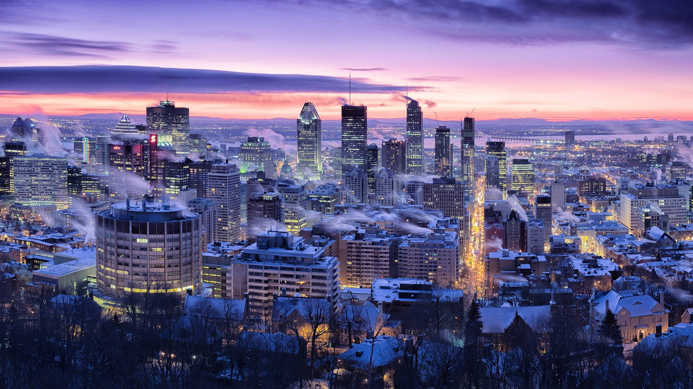
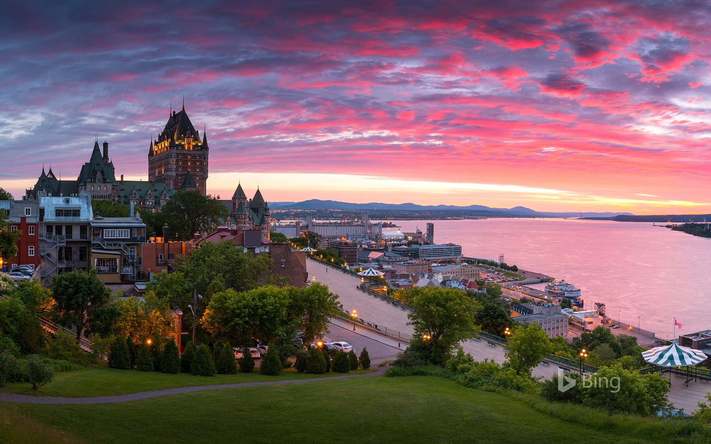
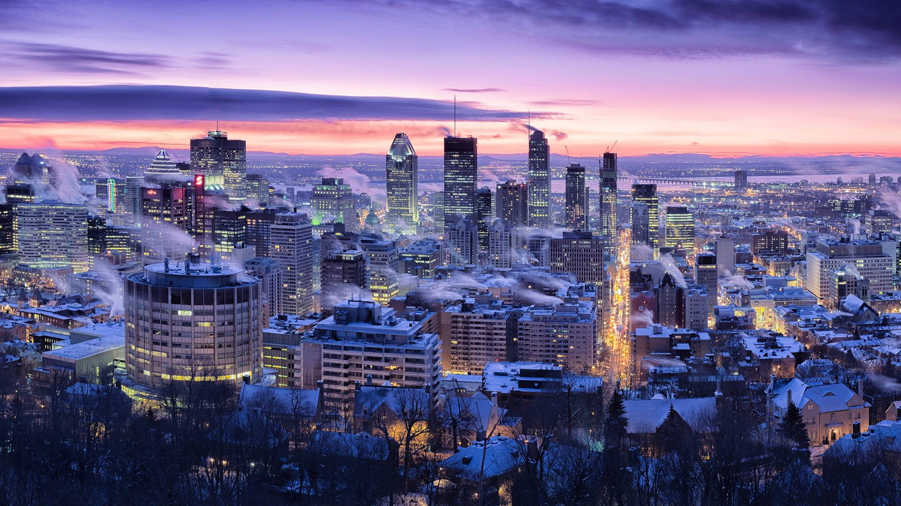
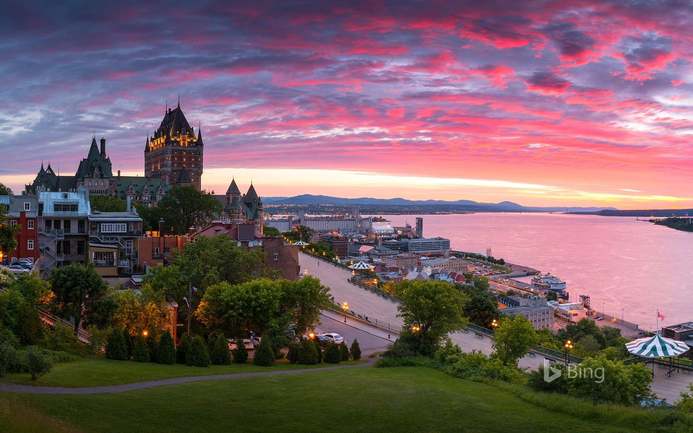

Niagara Falls
Les chutes du Niagara sont une merveille de la nature, situées à la frontière entre les USA et le Canada. Elles sont constituées de 3 chutes, dont la plus haute atteint 57 mètres. Plus que leur hauteur, c’est surtout leur largeur, leur puissance et leur débit d’eau (le plus important d’Amérique du Nord) qui rend les chutes si impressionnantes. Il est très facile de les observer depuis la rive, dont l’accès est gratuit.
En hiver, les Niagara Falls offrent un spectacle aussi magnifique que surprenant. La brume de l’eau se mêle aux parties gelées des chutes et aux diverses formations de glace le long des berges et sur la rivière.
Autre immanquable, le spectacle des chutes de nuit, puisque celles-ci sont éclairées par des projecteurs colorés. L’été, vous aurez également l’occasion d’admirer les feux d’artifices tous les vendredi et dimanche.
Quebec
La réputation de peuple chaleureux des Québécois n’est plus à faire. Partout, vous serez accueilli avec un grand sourire. Ici les gens sont heureux et fiers de leur culture francophone en Amérique.
Difficile de ne pas succomber aux charmes du Vieux-Québec, berceau de l'Amérique française et seule ville fortifiée au nord de Mexico. Profitez d’une balade à travers ses rues pavées de plus de 400 ans pour apprécier son patrimoine exceptionnel.
Grâce à la passion débordante de ses chefs émergents et établis, la scène gastronomique de Québec s’anime jour après jour. Ces artistes de la table réinventent avec doigté les classiques et développent de nouvelles tendances, mettant en valeur la proximité et les richesses du terroir local.
Découvrez des sites naturels spectaculaires. Franchissez la passerelle au-dessus de la chute Montmorency, qui dépasse de 30 mètres celles du Niagara, ou défiez les hauteurs du vertigineux canyon Sainte-Anne. À moins que vous ne préfériez parcourir la vallée glaciaire du parc national de la Jacques-Cartier ou encore un des lacs paisibles ou une des rivières tumultueuses qui font la fierté de la région ?
Toronto
L’aspect le plus séduisant de la culture torontoise se trouve peut-être dans sa vaste gamme de mets provenant de différentes parties du monde. Pour des plats canadiens, voyez la cuisine de St. Lawrence Market ou procurez-vous des aliments frais au marché fermier. Le centre-ville de Toronto offre nombre de choix fins, comme le bar à pâtes haut de gamme Scaramouche, qui demande habituellement une réservation. Avant de dîner, allez prendre un verre au chic Barchef, connu pour ses cocktails expérimentaux de belle allure.
La situation exceptionnelle de Toronto au bord du lac Ontario en fait un endroit où il est facile de passer du temps dehors. Les alentours de la ville offrent plusieurs adorables expériences dans la nature, avec les nombreux sentiers de l’aire de conservation Rattlesnake Point. Des promenades courtes et accessibles, menant à des points de vue extra-ordinaires, il s’agit d’ailleurs d’une des destinations d'escalade les plus populaires de l'Ontario. Le plus célèbre et ancien sentier du pays, Bruce Trail vaut pleinement le trajet hors de la ville.
La liste des choses à voir à Toronto semble infinie — les innombrables musées, sites historiques et épicentres culturels s’agrémentent de découvertes fortuites : art de rue coloré, musiciens de rue talentueux, boutiques excentriques...
Ottawa
Établie comme capitale du Canada en 1857, alors qu’elle était à peine plus qu’un village, Ottawa est devenue l’une des villes les plus dynamiques et les plus intéressantes du Canada sans jamais perdre son charme de petite ville.
Avec un centre-ville accessible à pied, d’excellentes liaisons de transport en commun, une abondance de parcs, une culture de cafés et de restaurants en plein air, des gens extrêmement sympathiques et de belles banlieues rurales, il est facile de comprendre pourquoi Ottawa est l’une des capitales les plus appréciées au monde.
Les étés y sont chauds et les hivers froids (et longs), mais cela n’empêche personne de s’amuser. En fait, l’hiver est l’une des meilleures saisons pour visiter Ottawa, où le célèbre canal Rideau, triomphe historique d’ingénierie et site du patrimoine mondial de l’UNESCO, se transforme dans la plus grande patinoire du monde, avec des stands de nourriture et de location de patins sur glace et une atmosphère carnavalesque.
Montreal
En plein cœur de la ville trône le mont Royal, la vue de là-haut est époustouflante! Le belvédère Kondiaronk est l’endroit parfait où se prendre en photo : la ville entière se déploie sous nos pieds, avec le fleuve Saint-Laurent qui se la coule douce sous nos yeux. Le parc est vraiment l’endroit idéal où rencontrer les Montréalais « nature ».
En quête d’animation? C’est au Quartier des spectacles que ça se passe. Ce quadrilatère d’un kilomètre carré où se côtoient la Place des Arts, le Musée d’art contemporain et l’Opéra de Montréal accueille des événements, des spectacles, des installations artistiques et bien d’autres activités d’animation, hiver comme été, dans les rues fermées à la circulation routière.
A Montreal on appelle affectueusement « le Vieux » les quartiers du Vieux-Montréal et du Vieux-Port. Pas juste parce que les deux sont vieux, mais surtout parce qu’ils forment une entité unique pour les Montréalais. Malgré son grand âge, le Vieux se réinvente tout le temps : chaque année de nouvelles propositions d’activités viennent se blottir dans ses rues centenaires, à côté des bâtiments patrimoniaux.